深岩之下 Darker Depths
共 143 个条目 · darkerdepths
版本: 2.1.4 · 来源: darkerdepths-2.1.4.jar
A mod to expand the underground
Author:
- Naterbobber
Main Developers:
- Naterbobber
- Orcinus
- Blackgear
Artist:
- Naterbobber
- Toxteer
-Other Contributors:
- MHImoment
MC百科中文名: 深岩之下
MC百科页面: https://www.mcmod.cn/class/3960.html（深岩之下 (DarkerDepths)）
官方介绍 （Modrinth · 中文版由 GLM AI 翻译，仅供参考）
Darker Depths 是一个地下世界扩展模组。
目前 Darker Depths 新增了 3 种生物群系：
Glowshroom Forest（荧光蘑菇森林）
剧透
荧光蘑菇洞窟是你找到大型荧光蘑菇、荧光蘑菇怪物、glowgrime 以及 Glowshroom Cap（荧光蘑菇帽）的地方。 Glowshroom Cap 戴上后耐久有限，会发出光亮，还会给佩戴者提供急迫 I。Sandy Catacombs（黄沙地下墓穴）
剧透
Sandy Catacombs 是一片荒凉的废土。石化的树根从洞顶垂下，aridrock（干旱岩）与巨石散布在洞穴内部。 这里栖息着一类没有灵魂的新型生物。它们在地下墓穴中游荡，渴望与下一个受害者绑定在一起。 Void Soul（虚空之魂）生物被击杀后并不会死去，而是化为 Void Souls。这颗宝珠无法被伤害，但 60 秒后就会消散。手持玻璃瓶右键点击，就能把 Void Souls 收进瓶罐里；手持琥珀右键点击则能阻止它们消散。 这里还有一座新结构，名字就叫 Catacombs（地下墓穴），你会在其中遇到 Body Snatchers（夺躯者）、Void Soul Knights（虚空之魂骑士）、Tombs（坟墓）、Paranoia（妄想怪）以及 Forsaken Bronze（遗弃青铜）。 受 Void Souls 之力的诅咒，这种 Forsaken Bronze 能赋予非同寻常的能力。这种金属可用于合成若干实用物品，包括 Death Anchor（死亡之锚）、Stiletto（短剑）和 Tombs（坟墓）。Molten Cavern（熔洞）
剧透
Molten Cavern 是一个酷热难当的生物群系，这里的深板岩已变成 Darkslate（暗板岩），熔岩以分层水池的形式分布。间歇泉、Amber Clusters（琥珀晶簇）以及 Dead Living Crystals（死寂水晶）都能在这里找到。 给 Dead Living Crystals 一颗钻石，就能将它们唤醒。从那时起，它们会开始逐渐恢复生机。完全长成后，它们会变成 Living Crystal（活性水晶），可以蔓延到附近的钻石矿上，也可能——只要给它足够的时间——爱上西瓜的味道。 当 Living Crystal 对西瓜产生了渴望，Crystal Melon（水晶西瓜）便会诞生。把一个西瓜放在活性水晶旁边，它会先变成一颗石瓜，随后水晶在内部不断生长，最终破壳而出，化作 Crystal Melon。 把 Crystal Melon 放在副手中使用，它会为任何工具超级充能：使其无法损耗，并在 5 分钟内提供 20% 的额外攻击速度、挖掘速度与攻击伤害。 （可通过配置文件调整）由 GLM AI 翻译，仅供参考
查看英文原文（Modrinth）
Darker Depths is a underground expansion mod.
There are currently 3 biomes added to Darker Depths:
Glowshroom Forest
Spoiler
The glowshroom cavern is where you will find large glowshrooms, the glowshroom monster, glowgrime, and the Glowshroom Cap. The Glowshroom Cap when worn, has limited durability, provides light, and also provides the user haste 1.Sandy Catacombs
Spoiler
The Sandy Catacombs is a desolate wasteland. Petrified roots hang from the ceiling, aridrock & boulders dot the inner cave landscape. A new class of mob without souls can be found here. They wander the catacombs in the hopes of binding with their next victim. Void Soul mobs when killed, don't die, but rather are turned into Void Souls. This orb is invulnerable, but will expire after 60 seconds. Upon right clicking with a glass bottle, Void Souls can be captured into a jar. Right clicking with Amber stops them from expiring. A new structure is found here, aptly named the Catacombs, where you will find Body Snatchers, Void Soul Knights, Tombs, Paranoia, and Forsaken Bronze. Cursed by the presence of the Void Souls, this Forsaken Bronze allows for unnatural abilities. This metal can be used to craft a few useful items, including the Death Anchor, the Stiletto, and Tombs.Molten Cavern
Spoiler
The Molten Cavern is a raging hot biome, where Deepslate has turned into Darkslate and lava can be found in layered pools. Geysers, Amber Clusters, and Dead Living Crystals can be found here. Dead Living Crystals can be reawakened by giving them a diamond. From there, they will start to grow back to life. When they have fully grown, they will turn into Living Crystal, which can spread to nearby diamond ore, or grow a taste for Melons, if you give them enough time. Crystal Melons are formed when a Living Crystal has a hunger for Melons. Placing a Melon near a living crystal will cause it to turn into a stone melon, then growing inside until it finally breaks free of its shell, converting to a Crystal Melon. Crystal Melons when used while in the offhand, will supercharge any tool to make it unbreakable, give 20% more attack speed, mining speed, and attack damage, for 5 minutes. (Adjustable via config)资料来源：Darker Depths
物品与方块
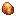
琥珀darkerdepths:amber · 物品
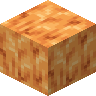
琥珀块darkerdepths:amber_block · 方块琥珀簇
darkerdepths:amber_cluster · 方块
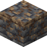
旱地深板岩darkerdepths:arid_deepslate · 方块
 旱地岩
旱地岩darkerdepths:aridrock · 方块
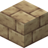
旱地岩砖darkerdepths:aridrock_bricks · 方块
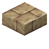
旱地岩砖台阶darkerdepths:aridrock_bricks_slab · 方块
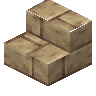
旱地岩砖楼梯darkerdepths:aridrock_bricks_stairs · 方块
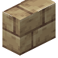
旱地岩砖竖半砖darkerdepths:aridrock_bricks_vertical_slab · 方块
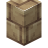
旱地岩砖墙darkerdepths:aridrock_bricks_wall · 方块
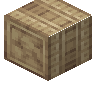
旱地岩柱darkerdepths:aridrock_pillar · 方块
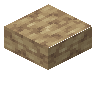
旱地岩台阶darkerdepths:aridrock_slab · 方块
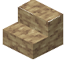
旱地岩楼梯darkerdepths:aridrock_stairs · 方块
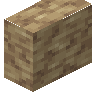
旱地岩竖半砖darkerdepths:aridrock_vertical_slab · 方块
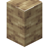
旱地岩墙darkerdepths:aridrock_wall · 方块
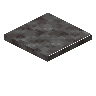
灰烬darkerdepths:ash · 方块
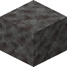
灰烬块darkerdepths:ash_block · 方块
 夺躯者刷怪蛋
夺躯者刷怪蛋darkerdepths:body_snatcher_spawn_egg · 物品
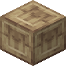
雕纹旱地岩砖darkerdepths:chiseled_aridrock_bricks · 方块
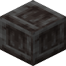
雕纹暗板岩砖darkerdepths:chiseled_darkslate_bricks · 方块
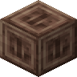
雕纹暮色岩砖darkerdepths:chiseled_duskrock_bricks · 方块
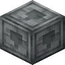
雕纹阴森石砖darkerdepths:chiseled_grimestone_bricks · 方块
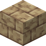
裂纹旱地岩砖darkerdepths:cracked_aridrock_bricks · 方块
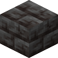
裂纹暗板岩砖darkerdepths:cracked_darkslate_bricks · 方块
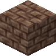
裂纹暮色岩砖darkerdepths:cracked_duskrock_bricks · 方块
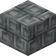
裂纹阴森石砖darkerdepths:cracked_grimestone_bricks · 方块
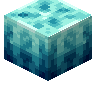
水晶西瓜darkerdepths:crystal_melon · 方块
 暗板岩
暗板岩darkerdepths:darkslate · 方块
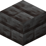
暗板岩砖darkerdepths:darkslate_bricks · 方块
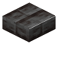
暗板岩砖台阶darkerdepths:darkslate_bricks_slab · 方块
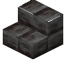
暗板岩砖楼梯darkerdepths:darkslate_bricks_stairs · 方块
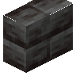
暗板岩砖竖半砖darkerdepths:darkslate_bricks_vertical_slab · 方块
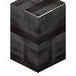
暗板岩砖墙darkerdepths:darkslate_bricks_wall · 方块
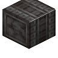
Darkslate Pillardarkerdepths:darkslate_pillar · 方块
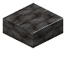
暗板岩台阶darkerdepths:darkslate_slab · 方块
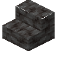
暗板岩楼梯darkerdepths:darkslate_stairs · 方块
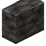
暗板岩竖半砖darkerdepths:darkslate_vertical_slab · 方块
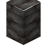
暗板岩墙darkerdepths:darkslate_wall · 方块
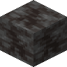
死寂活晶darkerdepths:dead_living_crystal · 方块
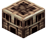
死亡锚点darkerdepths:death_anchor · 方块
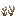
干枯萌芽darkerdepths:dry_sprouts · 方块
 暮色岩
暮色岩darkerdepths:duskrock · 方块
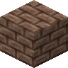
暮色岩砖darkerdepths:duskrock_bricks · 方块
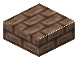
暮色岩砖台阶darkerdepths:duskrock_bricks_slab · 方块
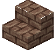
暮色岩砖楼梯darkerdepths:duskrock_bricks_stairs · 方块
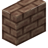
暮色岩砖竖半砖darkerdepths:duskrock_bricks_vertical_slab · 方块
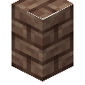
暮色岩砖墙darkerdepths:duskrock_bricks_wall · 方块
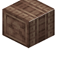
Duskrock Pillardarkerdepths:duskrock_pillar · 方块
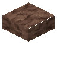
暮色岩台阶darkerdepths:duskrock_slab · 方块
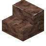
暮色岩楼梯darkerdepths:duskrock_stairs · 方块
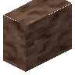
暮色岩竖半砖darkerdepths:duskrock_vertical_slab · 方块
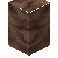
暮色岩墙darkerdepths:duskrock_wall · 方块
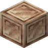
遗弃青铜块darkerdepths:forsaken_bronze_block · 方块
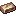
遗弃青铜锭darkerdepths:forsaken_bronze_ingot · 物品
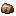
遗弃青铜碎屑darkerdepths:forsaken_bronze_scrap · 物品间歇泉
darkerdepths:geyser · 方块Glimmering Vine Plant
darkerdepths:glimmering_vine_plant · 方块微光藤蔓
darkerdepths:glimmering_vines · 方块
 荧光污垢
荧光污垢darkerdepths:glow_grime · 物品
 荧光菇
荧光菇darkerdepths:glowshroom · 方块荧光菇块
darkerdepths:glowshroom_block · 方块荧光菇帽
darkerdepths:glowshroom_cap · 物品荧光菇心
darkerdepths:glowshroom_heart · 方块荧光菇灯
darkerdepths:glowshroom_lamp · 方块荧光菇灯笼
darkerdepths:glowshroom_lantern · 方块
荧光菇怪刷怪蛋darkerdepths:glowshroom_monster_spawn_egg · 物品荧光菇柄
darkerdepths:glowshroom_stem · 方块荧光刺
darkerdepths:glowspurs · 方块
 阴森石
阴森石darkerdepths:grimestone · 方块阴森石砖
darkerdepths:grimestone_bricks · 方块阴森石砖台阶
darkerdepths:grimestone_bricks_slab · 方块阴森石砖楼梯
darkerdepths:grimestone_bricks_stairs · 方块阴森石砖竖半砖
darkerdepths:grimestone_bricks_vertical_slab · 方块阴森石砖墙
darkerdepths:grimestone_bricks_wall · 方块Grimestone Pillar
darkerdepths:grimestone_pillar · 方块阴森石台阶
darkerdepths:grimestone_slab · 方块阴森石楼梯
darkerdepths:grimestone_stairs · 方块阴森石竖半砖
darkerdepths:grimestone_vertical_slab · 方块阴森石墙
darkerdepths:grimestone_wall · 方块活晶
darkerdepths:living_crystal · 方块岩浆垫
darkerdepths:magma_pad · 方块?Mob Placer
darkerdepths:mob_placer · 方块苔藓阴森石
darkerdepths:mossy_grimestone · 方块苔藓萌芽
darkerdepths:mossy_sprouts · 方块偏执祭坛
darkerdepths:paranoia_altar · 方块Petrified Boards
darkerdepths:petrified_boards · 方块
 石化木船
石化木船darkerdepths:petrified_boat · 物品Petrified Bookshelf
darkerdepths:petrified_bookshelf · 方块石化木按钮
darkerdepths:petrified_button · 方块
 石化木运输船
石化木运输船darkerdepths:petrified_chest_boat · 物品石化木门
darkerdepths:petrified_door · 方块石化木栅栏
darkerdepths:petrified_fence · 方块石化木栅栏门
darkerdepths:petrified_fence_gate · 方块Petrified Hanging Sign
darkerdepths:petrified_hanging_sign · 方块石化原木
darkerdepths:petrified_log · 方块石化木板
darkerdepths:petrified_planks · 方块石化木柱
darkerdepths:petrified_post · 方块石化木压力板
darkerdepths:petrified_pressure_plate · 方块石化根
darkerdepths:petrified_roots · 方块Petrified Roots Plant
darkerdepths:petrified_roots_plant · 方块石化木告示牌
darkerdepths:petrified_sign · 方块石化木台阶
darkerdepths:petrified_slab · 方块石化木楼梯
darkerdepths:petrified_stairs · 方块石化木活板门
darkerdepths:petrified_trapdoor · 方块石化木竖半砖
darkerdepths:petrified_vertical_slab · 方块石化木
darkerdepths:petrified_wood · 方块磨制旱地岩
darkerdepths:polished_aridrock · 方块磨制旱地岩台阶
darkerdepths:polished_aridrock_slab · 方块磨制旱地岩楼梯
darkerdepths:polished_aridrock_stairs · 方块磨制旱地岩竖半砖
darkerdepths:polished_aridrock_vertical_slab · 方块磨制暗板岩
darkerdepths:polished_darkslate · 方块磨制暗板岩台阶
darkerdepths:polished_darkslate_slab · 方块磨制暗板岩楼梯
darkerdepths:polished_darkslate_stairs · 方块磨制暗板岩竖半砖
darkerdepths:polished_darkslate_vertical_slab · 方块磨制暮色岩
darkerdepths:polished_duskrock · 方块磨制暮色岩台阶
darkerdepths:polished_duskrock_slab · 方块磨制暮色岩楼梯
darkerdepths:polished_duskrock_stairs · 方块磨制暮色岩竖半砖
darkerdepths:polished_duskrock_vertical_slab · 方块磨制阴森石
darkerdepths:polished_grimestone · 方块磨制阴森石台阶
darkerdepths:polished_grimestone_slab · 方块磨制阴森石楼梯
darkerdepths:polished_grimestone_stairs · 方块磨制阴森石竖半砖
darkerdepths:polished_grimestone_vertical_slab · 方块多孔石化原木
darkerdepths:porous_petrified_log · 方块
 Potted Glowshroom
Potted Glowshroomdarkerdepths:potted_glowshroom · 方块绳索
darkerdepths:rope · 方块
 Scorched Remains
Scorched Remainsdarkerdepths:scorched_remains · 方块
 Block of Scorched Remains
Block of Scorched Remainsdarkerdepths:scorched_remains_block · 方块?Scorcher Light Block
darkerdepths:scorcher_light_block · 方块
Scorcher Spawn Eggdarkerdepths:scorcher_spawn_egg · 物品颅骨墙
darkerdepths:skull_wall · 方块短剑
darkerdepths:stiletto · 物品石西瓜
darkerdepths:stone_melon · 方块去皮石化原木
darkerdepths:stripped_petrified_log · 方块去皮石化木柱
darkerdepths:stripped_petrified_post · 方块去皮石化木
darkerdepths:stripped_petrified_wood · 方块墓穴
darkerdepths:tomb · 方块Trimmed Petrified Planks
darkerdepths:trimmed_petrified_planks · 方块竖纹石化木板
darkerdepths:vertical_petrified_planks · 方块虚空魂瓮
darkerdepths:void_soul_jar · 方块
虚空魂骑士刷怪蛋darkerdepths:void_soul_knight_spawn_egg · 物品虚空魂安魂曲
darkerdepths:void_soul_requiem · 物品
虚空之魂刷怪蛋darkerdepths:void_soul_spawn_egg · 物品虚空魂火把
darkerdepths:void_soul_torch · 方块